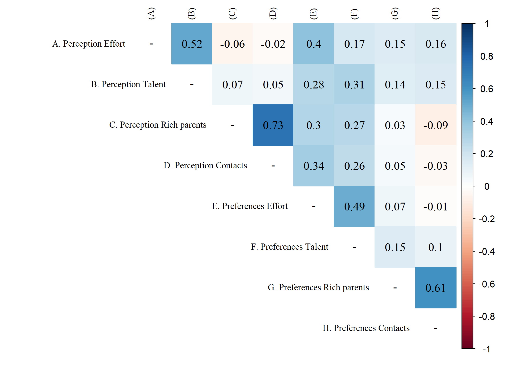

Introduction
Methods
Discussion
Siempre hay que usar “../” ya que al compilar el sitio, en la carpeta “public”, se crea una carpeta “paper” al mismo nivel que la carpeta “output”.
knitr::include_graphics("output/images/corpoly.png")
